Concurso Nacional de Ideas · Resistencia, Chaco · 2021
1er PremioFicha técnica
Memoria descriptiva
Sobre el predio del ex Hospital Pediátrico de Resistencia —casi una manzana completa vacante en una zona residencial en crecimiento— la propuesta plantea un edificio que "vive hacia adentro": un gran patio central funciona como regulador climático, integrando los árboles existentes, un reservorio de restauración ecológica y las ruinas del hospital como memoria del sitio.
El programa reúne usos mixtos en el basamento —locales comerciales, gastronomía, juegos infantiles, oficinas del INSSSEP y una escuela de artes escultóricas y oficios con talleres, aulas, microcine, sala de exposiciones y biblioteca— junto a tres torres de vivienda, una de ellas de gran altura, articuladas por una pantalla interactiva central.
La estrategia de sustentabilidad combina corredores de aire cruzados, aleros perimetrales, ventilación cruzada que evita el uso de aire acondicionado, un efecto Venturi en espiral, parasoles corredizos en los balcones, huertas en la terraza del basamento y pérgolas con paneles solares. El proyecto se piensa por etapas, a partir de un módulo de 10 metros de frente de lote.
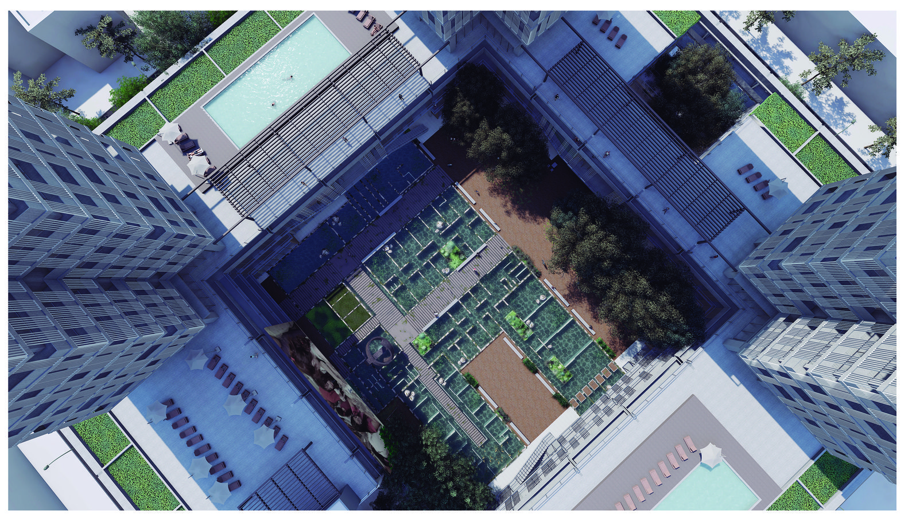
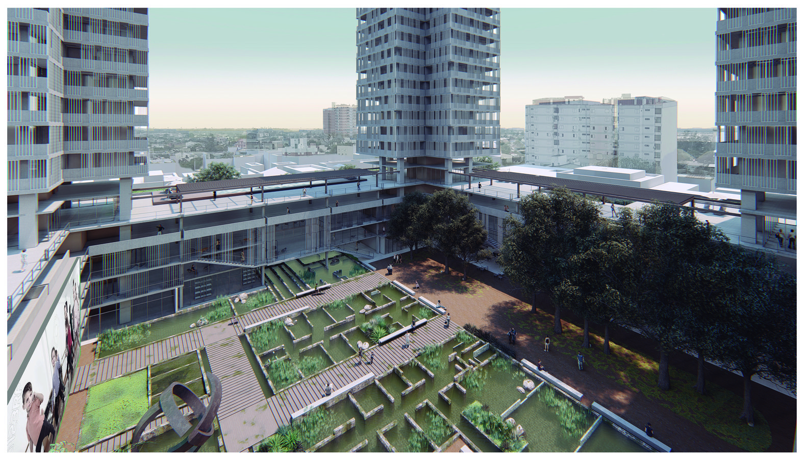
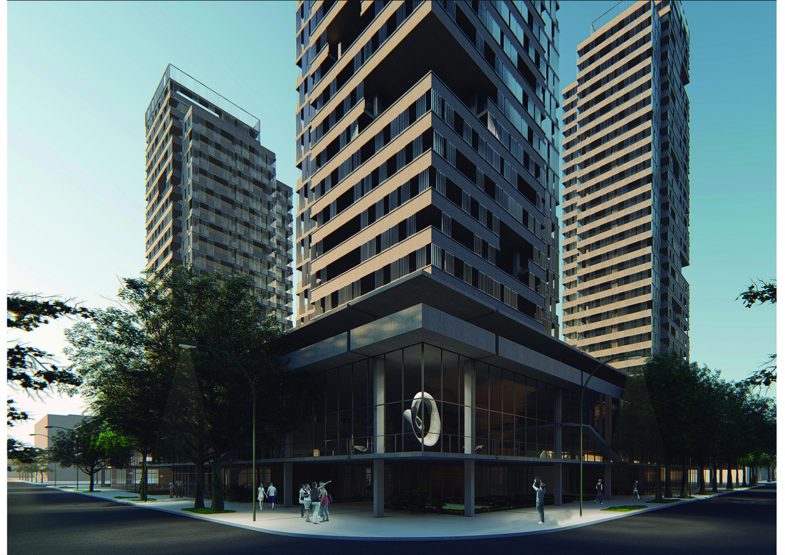
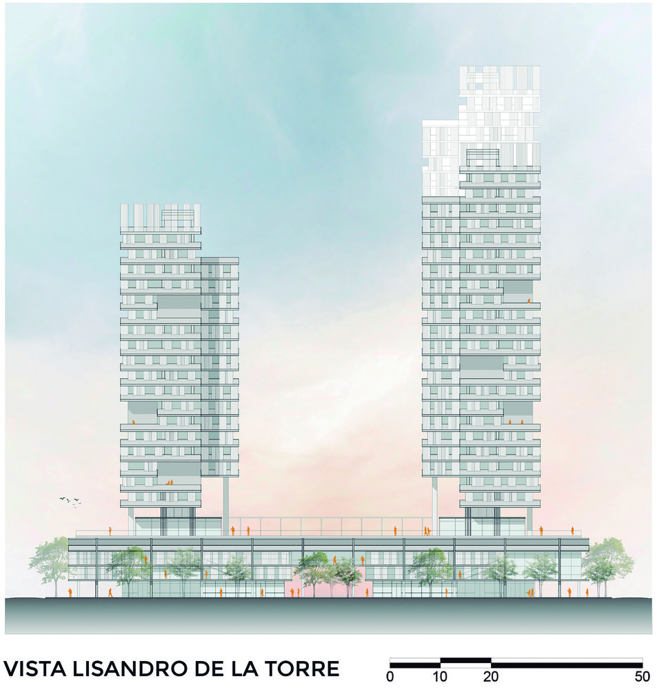
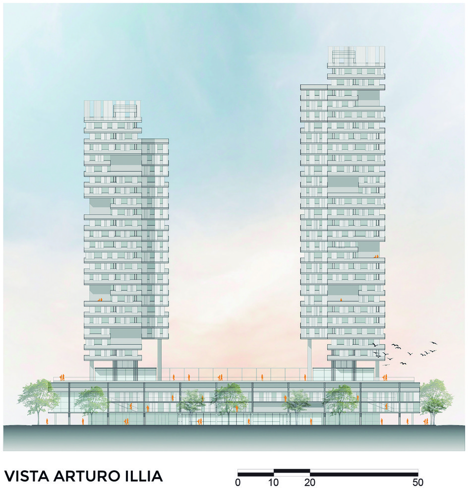
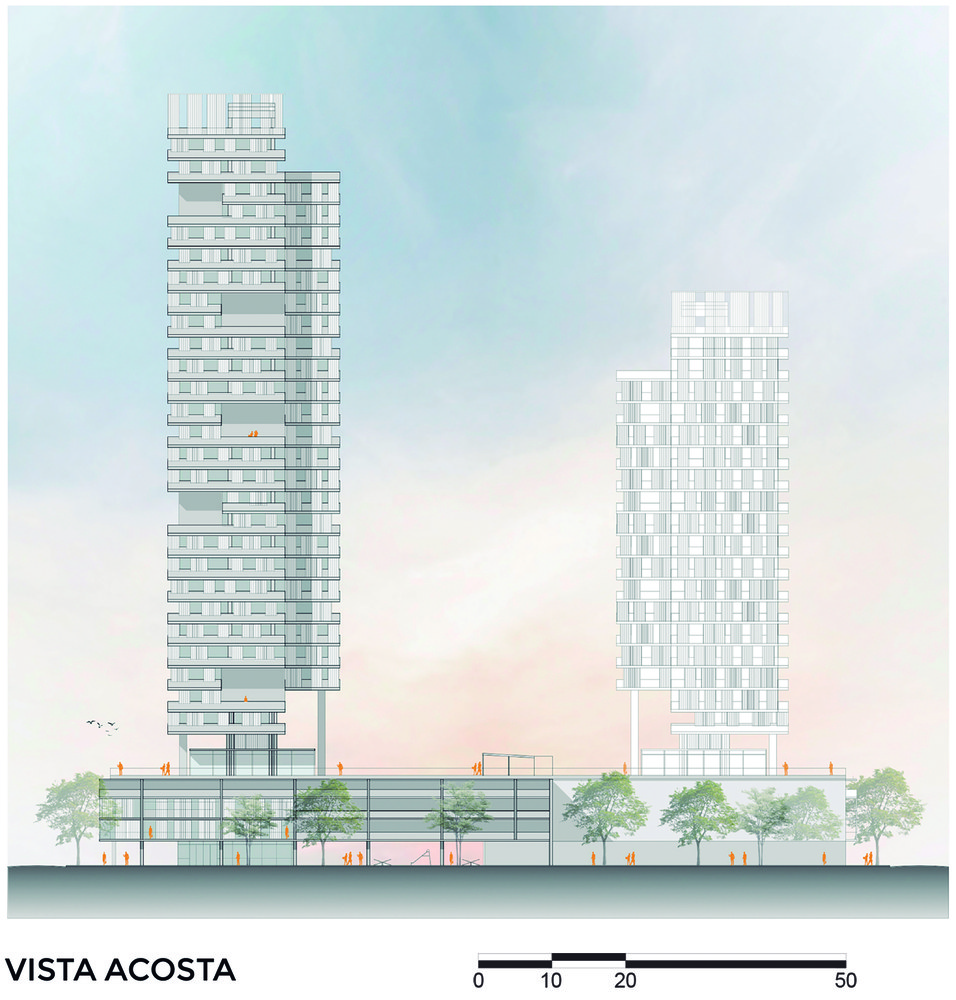
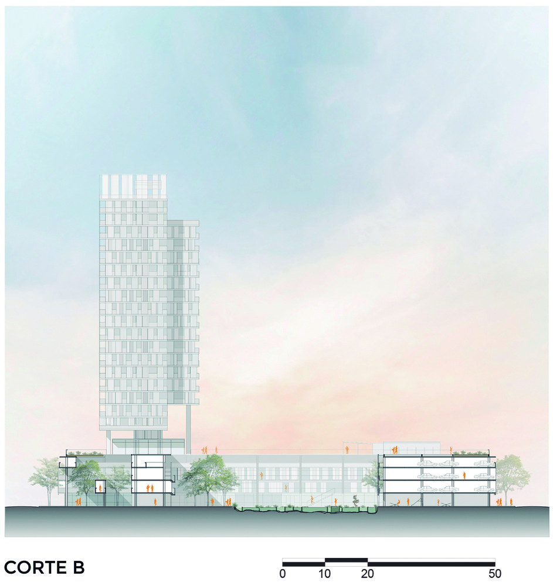
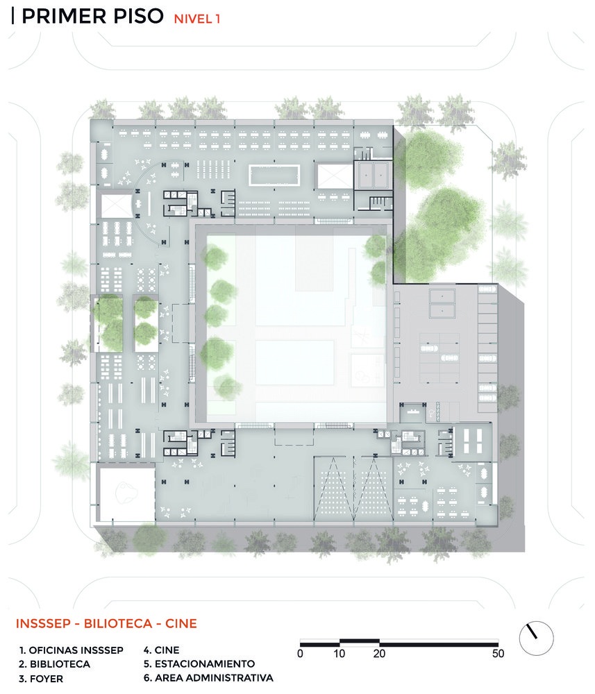
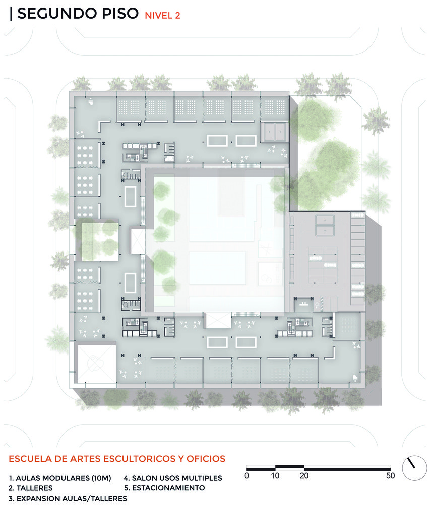
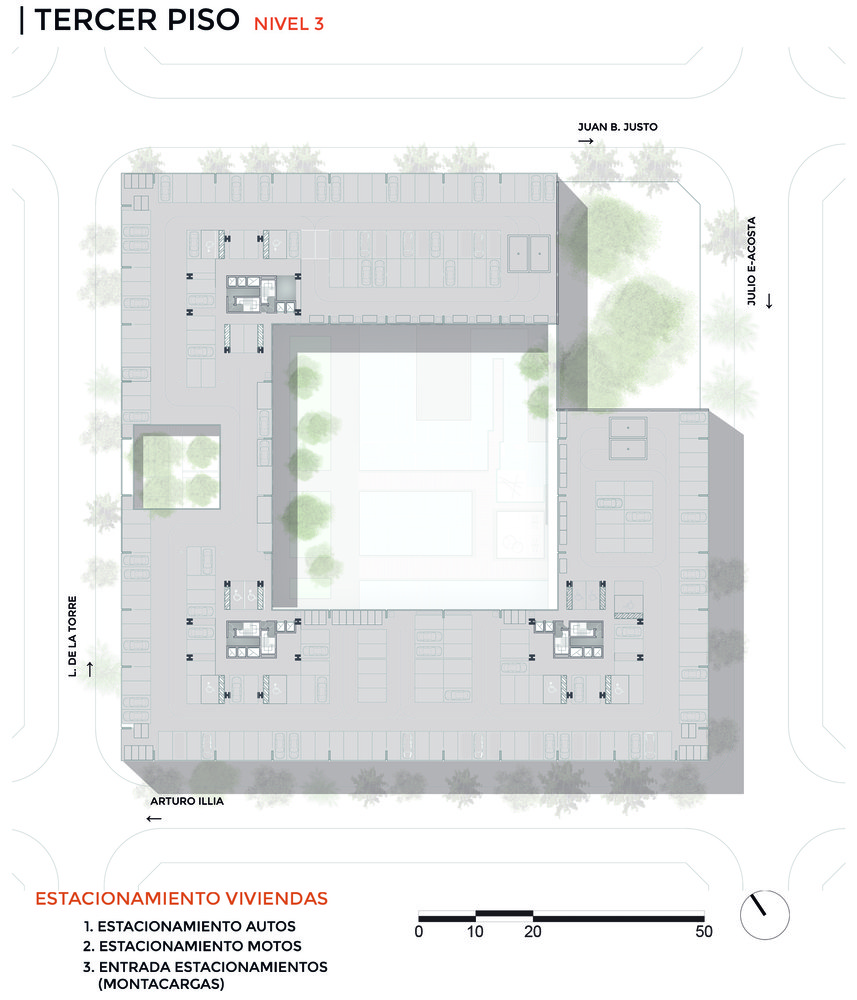
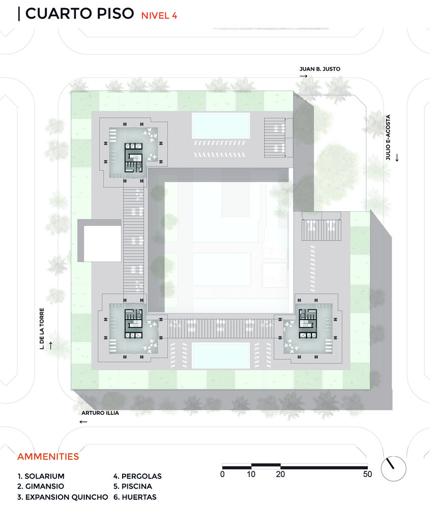